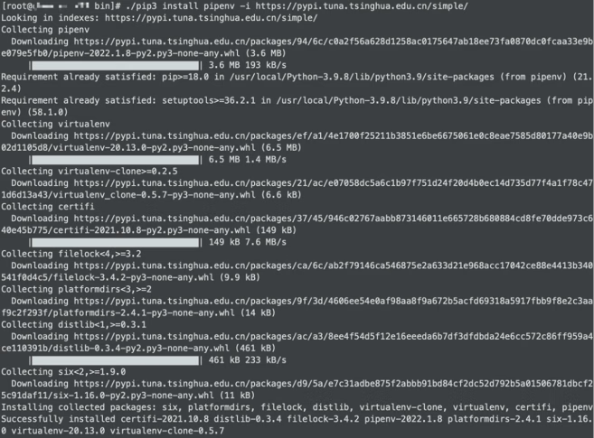
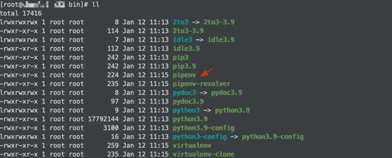
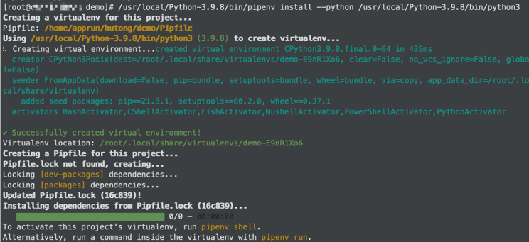
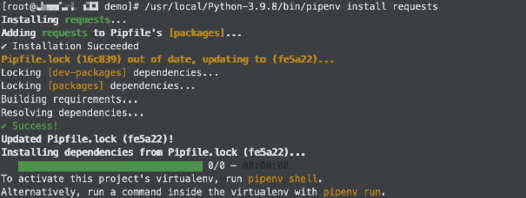
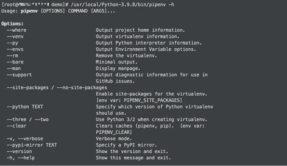
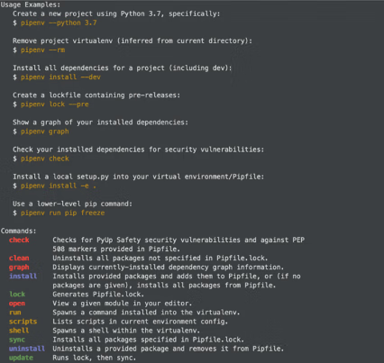
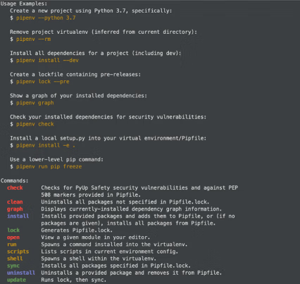
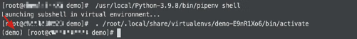

首页 > 编程笔记
pipenv使用教程（非常详细）
pipenv 是一款 Python 虚拟环境管理工具。
常见的 Python 虚拟环境管理工具有 virtualenv、virtualenvwrapper、pipenv、conda 等，其中笔者比较推荐的是 pipenv。
pipenv 类似 virtualenv，它是一种 Python 包管理工具，能自动处理各种工具之间的依赖关系，也能解决不同项目对于同一个工具有不同版本需求，而产生的同工具不同版本冲突的问题。
pipenv 就是 pip 和 virtualenv 的结合体，它的出现解决了原有的 pip、virtualenv、requirements.txt 的工作方式的局限和弊端，能够更有效地管理 Python 的多个环境、各种第三方工具。
pipenv 能解决以下两个问题。
pipenv 很好地解决了上述的两大问题，因此具备如下特性：
pipenv 安装过程如图1所示。命令为：
pipenv 安装完成后如图2所示，在 pip 相同的目录下会生成 pipenv 工具的相关文件。
1) 创建目录 demo 的命令为 mkdir demo。
2) 进入目录 demo 的命令为 cd demo。
3) 指定使用 Python 3.9.8 创建虚拟环境，否则为本地默认版本，命令为
安装完成后会在项目目录 demo 下自动生成 Pipfile 和 Pipfile.lock 两个文件，目录 demo 下的文件如图4所示，虚拟环境就是通过这两个文件进行管理依赖的。
图4：目录demo下的文件
项目提交时，可将 Pipfile 文件和 Pipfile.lock 文件提交，待其他开发人员下载，根据此 Pipfile 文件，执行命令 pipenv install 来生成自己的虚拟环境。而 Pipfile.lock 文件用于保证包的完整性。
Pipfile 文件主要用来配置项目依赖的第三方工具、工具包的镜像源、Python 解释器的版本等，该文件的示例如下：
在正常情况下，Pipfile.lock 文件不会自动更新工具的版本，例如安装的 requests 库一开始是 2.26.0 版本，后来指定安装 2.25.1 版本，那么 Pipfile 文件会更新，但是 Pipfile.lock 文件不会更新，只有手动执行 pipenv lock 命令后才会更新。
Pipfile.lock 文件保存了包的哈希值，这是确保生产环境和开发环境包信息一致的关键。当我们把项目从开发环境复制到生产环境，我们只需要执行 pipenv install，而无须重新安装之前在开发环境中安装的包，这很省心。
另外，pipenv install 提供了
1) 更改安装源，修改项目目录下的 Pipfile 文件中 url 后边的内容。pipenv 本身就是基于 pip 的，所以也可以更换安装源。
例如下面的 Pipfile 文件中使用阿里云提供的安装源：
pipenv 具体的使用方法为：
pipenv 可使用的命令如表3所示。
例如，进入（激活）虚拟环境，执行 pipenv shell 命令。
虚拟环境创建好后，需要被激活才能在当前命令行中使用，可以理解为将当前命令行环境中 PATH 变量的值替换。此时 pipenv 会启动一个激活虚拟环境的子 shell，然后我们会发现命令行提示符前添加了虚拟环境名，虚拟环境名为项目名。
激活虚拟环境示例如图8所示。
在虚拟环境下，执行 exit 命令即可退出虚拟环境。所以，若要在虚拟环境中执行 Python 脚本，有如下两种方式。
1) 第一种是直接执行命令：
2) 第二种是先激活虚拟环境，然后再运行脚本，命令如下：
如果一个 Python 环境中，创建了两个不同的项目，各自有不同的依赖，那么导出的依赖会是两个项目依赖的并集，虽然这对部署来说没有问题，但安装没必要的依赖不算是好事，后续可能出现包冲突的问题。
因此，在创建项目时，为其创建一个独立的 Python 虚拟环境是个好的编程习惯。
我们执行命令：
Pipfile.lock 文件记录了所有包和子包的明确版本，以完成确定的构建。如果要在另一个开发环境开发，则将代码和 Pipfile 文件复制过去，执行命令：
我们之所以要在开发时养成创建和使用虚拟环境的好习惯，除了避免未来工具之间的冲突，还有一个重要的原因是方便部署迁移。因为虚拟环境是独立的，仅包含项目相关的依赖，所以部署的效率更高，风险更小。
常见的 Python 虚拟环境管理工具有 virtualenv、virtualenvwrapper、pipenv、conda 等，其中笔者比较推荐的是 pipenv。
pipenv 类似 virtualenv，它是一种 Python 包管理工具，能自动处理各种工具之间的依赖关系，也能解决不同项目对于同一个工具有不同版本需求，而产生的同工具不同版本冲突的问题。
pipenv 就是 pip 和 virtualenv 的结合体，它的出现解决了原有的 pip、virtualenv、requirements.txt 的工作方式的局限和弊端，能够更有效地管理 Python 的多个环境、各种第三方工具。
pipenv 能解决以下两个问题。
1) requirements.txt依赖管理的局限
使用 requirements.txt 管理依赖的时候可能会出现版本不确定的构建问题。2) 多个项目依赖不同版本第三方工具的问题
例如，应用程序A需要特定模块的 1.0 版本但应用程序B需要该模块的 2.0 版本，当我们在A和B应用程序间切换时，需要不断检测、卸载、安装该模块。这意味着只安装一个版本的模块可能无法满足每个应用程序的要求，因此需要创建虚拟环境来将 A、B 应用程序所需的第三方工具包分隔开来。pipenv 很好地解决了上述的两大问题，因此具备如下特性：
- pipenv 集成了 pip、virtualenv 两者的功能且完善了两者的一些缺陷。pipenv 使用 Pipfile 和 Pipfile.lock，这使得对工具包的管理更为明确。
- pipenv 让使用者可以深入地了解第三方工具包的依赖关系图。我们使用命令 pipenv graph 即可查看第三方工具包的依赖关系图。
1. pipenv 安装
pipenv 的安装依赖于 pip，如果没有配置和安装好 pip，需要先安装 pip。如果系统中是 Python 3，那么可以直接使用 pip3 进行安装。pipenv 安装过程如图1所示。命令为：
pip3 install pipenv -i https://pypi.tuna.tsinghua.edu.cn/simple/
其中，-i表示采用指定的地址进行下载安装。

图1：pipenv 安装过程
图1：pipenv 安装过程
pipenv 安装完成后如图2所示，在 pip 相同的目录下会生成 pipenv 工具的相关文件。

图2：pipenv 安装成功
图2：pipenv 安装成功
2. 创建虚拟环境
接下来，通过如下命令创建一个在指定目录下的全新虚拟环境。1) 创建目录 demo 的命令为 mkdir demo。
2) 进入目录 demo 的命令为 cd demo。
3) 指定使用 Python 3.9.8 创建虚拟环境，否则为本地默认版本，命令为
pipenv install--python/ usr/local/Python-3.9.8/bin/python3
pipenv 创建虚拟环境成功如图3所示。

图3：pipenv 创建虚拟环境成功
图3：pipenv 创建虚拟环境成功
安装完成后会在项目目录 demo 下自动生成 Pipfile 和 Pipfile.lock 两个文件，目录 demo 下的文件如图4所示，虚拟环境就是通过这两个文件进行管理依赖的。
图4：目录demo下的文件
3. pipenv 管理依赖
pipenv 使用 Pipfile 代替 requirement.txt 文件来记录 Python 第三方工具的信息，另外增加 Pipfile.lock 文件来锁定 Python 第三方工具的包名、版本和依赖关系的列表。项目提交时，可将 Pipfile 文件和 Pipfile.lock 文件提交，待其他开发人员下载，根据此 Pipfile 文件，执行命令 pipenv install 来生成自己的虚拟环境。而 Pipfile.lock 文件用于保证包的完整性。
1) Pipfile 文件
每次创建环境在当前目录下都会生成一个名为 Pipfile 文件，用来记录刚创建的环境信息。如果在当前目录下存在之前的 Pipfile 文件，新的 Pipfile 文件会将其覆盖。Pipfile 文件主要用来配置项目依赖的第三方工具、工具包的镜像源、Python 解释器的版本等，该文件的示例如下：
# 主要用来配置包的下载网址 [[source]] # 指定包的安装镜像源，一般使用国内的镜像来加快下载速度 url = "https://mirrors.aliyun.com/pypi/simple/" verify_ssl = true name = "pypi" # 项目运行所需要依赖的第三方工具，即下载安装的工具包 [packages] flask-authz ==='2.4.0' # * 表示安装最新稳定版本 flask = '*' # 开发依赖的工具包 [dev-packages] # 开发环境需要的包，不常用 # Python 解释器配置 [requires] # 指定Python解释器的版本 python_version = "3.9"
2) Pipfile.lock 文件
Pipfile.lock 文件是通过哈希算法将包的名称、版本和依赖关系生成哈希值，可以保证包的完整性，锁定 Python 版本，便于以后项目发布使用固定的包。在正常情况下，Pipfile.lock 文件不会自动更新工具的版本，例如安装的 requests 库一开始是 2.26.0 版本，后来指定安装 2.25.1 版本，那么 Pipfile 文件会更新，但是 Pipfile.lock 文件不会更新，只有手动执行 pipenv lock 命令后才会更新。
Pipfile.lock 文件保存了包的哈希值，这是确保生产环境和开发环境包信息一致的关键。当我们把项目从开发环境复制到生产环境，我们只需要执行 pipenv install，而无须重新安装之前在开发环境中安装的包，这很省心。
4. pipenv 安装依赖工具包
接下来，我们用 pipenv 安装 requests 库试一下，命令为：pipenv install requests
pipenv 安装依赖工具包成功如图5所示。

图5：pipenv 安装依赖工具包成功
图5：pipenv 安装依赖工具包成功
另外，pipenv install 提供了
--dev参数，用于区分需要部署到线上的开发包和只需要在测试环境中执行的包，这样就能明确不需要部署在线上的包，尽可能保证包干净。
提示
第一次安装包会比较慢，因为安装过程包含创建虚拟环境的过程。另外，如果使用默认安装源，大多数情况下会卡在锁定阶段，一般解决办法有两个。1) 更改安装源，修改项目目录下的 Pipfile 文件中 url 后边的内容。pipenv 本身就是基于 pip 的，所以也可以更换安装源。
例如下面的 Pipfile 文件中使用阿里云提供的安装源：
[[source]] url = "https://mirrors.aliyun.com/pypi/simple" verify_ssl = true name = "pypi"2) 使用
--skip-lock参数跳过锁定过程，锁定过程会比较费时，可以等真正完成项目开发要提交到仓库时再去锁定。
5. 常用命令
一般通过命令 pipenv -h 可以看到 pipenv 的命令参数和命令示例，如图 6 和图 7 所示。

图6：pipenv 的命令参数

图7：pipenv 的命令示例
图6：pipenv 的命令参数

图7：pipenv 的命令示例
pipenv 具体的使用方法为：
pipenv [OPTIONS] COMMAND [ARGS]...
其中，OPTIONS（操作参数）如表2所示。| 操作参数 | 描述 |
|---|---|
| --where | 显示项目文件所在路径 |
| --venv | 显示虚拟环境下实际文件所在路径 |
| --py | 显示虚拟环境下Python解释器所在路径 |
| --envs | 显示虚拟环境的选项变量 |
| --rm | 删除虚拟环境 |
| --man | 显示帮助页面 |
| --three / --two | 使用Python 3或Python 2创建虚拟环境 |
| --site-packages | 附带安装原Python解释器中的第三方工具包 |
| --version | 显示版本信息 |
| -h, --help | 显示帮助信息 |
pipenv 可使用的命令如表3所示。
| 命令 | 描述 |
|---|---|
| check | 检查安全漏洞 |
| graph | 显示当前依赖关系图信息 |
| install | 安装虚拟环境或者第三方工具 |
| lock | 锁定并生成Pipfile.lock文件 |
| open | 在编辑器中查看一个工具 |
| run | 在虚拟环境中执行命令 |
| shell | 进入虚拟环境 |
| uninstall | 卸载一个工具 |
| update | 卸载当前所有的工具，并安装它们的最新版本 |
例如，进入（激活）虚拟环境，执行 pipenv shell 命令。
虚拟环境创建好后，需要被激活才能在当前命令行中使用，可以理解为将当前命令行环境中 PATH 变量的值替换。此时 pipenv 会启动一个激活虚拟环境的子 shell，然后我们会发现命令行提示符前添加了虚拟环境名，虚拟环境名为项目名。
激活虚拟环境示例如图8所示。

图8：激活虚拟环境示例
图8：激活虚拟环境示例
在虚拟环境下，执行 exit 命令即可退出虚拟环境。所以，若要在虚拟环境中执行 Python 脚本，有如下两种方式。
1) 第一种是直接执行命令：
pipenv run python test.py
2) 第二种是先激活虚拟环境，然后再运行脚本，命令如下：
pipenv shell
python test.py
两点提示
- 不要使用命令 pip install。虽然在虚拟环境中也会安装对应的包，但是不会更新 Pipfile 文件和 Pipfile.lock 文件，不便于后续的环境迁移。
- pipenv --rm 只是把创建的虚拟环境删除了，但 Pipfile 文件和 Pipfile.lock 文件还存在。下次如果想要创建与项目名相同的虚拟环境，只要切换到原项目目录下执行命令 pip install 即可。
6. 部署迁移虚拟环境
一般一个项目会创建一个目录，由于 Python 项目不需要编译，开发完成后，将项目目录拷贝到服务器上就可以完成部署了。但是，在项目开发过程中，我们会陆续安装和部署一些依赖工具，保证项目运行，要记住安装了哪些依赖不是件轻松的事。1) 以前的部署流程
使用 pip 提供的导出依赖工具名的功能，将环境中项目依赖的第三方工具名导出并导入 requirements.txt 文件。命令为：pip freeze > requirements.txt
然后，上传到服务器，在服务器上依据 requirements.txt 文件安装工具包，命令为：pip install -r requirements.txt
值得注意的是，pip freeze 命令并不是针对特定项目的，该命令导出的是所在 Python 环境中的所有第三方工具。如果一个 Python 环境中，创建了两个不同的项目，各自有不同的依赖，那么导出的依赖会是两个项目依赖的并集，虽然这对部署来说没有问题，但安装没必要的依赖不算是好事，后续可能出现包冲突的问题。
因此，在创建项目时，为其创建一个独立的 Python 虚拟环境是个好的编程习惯。
2) 现在的部署流程
我们通过 pipenv 使用虚拟环境管理项目依赖，在开发环境完成开发后，如何构建生产环境呢？这时候需要使用 Pipfile.lock 文件。我们执行命令：
pipenv lock
把当前环境的模块锁定，执行命令后它会更新 Pipfile.lock 文件，该文件是用于生产环境的。然后，我们只需要把代码、Pipfile 文件和 Pipfile.lock 文件放到生产环境，执行命令：pipenv install
就可以创建和开发环境一样的环境了。Pipfile.lock 文件记录了所有包和子包的明确版本，以完成确定的构建。如果要在另一个开发环境开发，则将代码和 Pipfile 文件复制过去，执行命令：
pipenv install --dev
将会安装包括 dev 对应的开发环境中的包。我们之所以要在开发时养成创建和使用虚拟环境的好习惯，除了避免未来工具之间的冲突，还有一个重要的原因是方便部署迁移。因为虚拟环境是独立的，仅包含项目相关的依赖，所以部署的效率更高，风险更小。
requirements.txt 文件的兼容
pipenv 可以像 virtualenv 一样用命令生成 requirements.txt 文件。# 将Pipfile文件和Pipfile.lock文件里面的工具名导出到requirements.txt文件 pipenv lock -r > requirements.txt # 通过requirements.txt文件进行安装 pipenv install -r requirements.txt如果老项目一开始没有使用 pipenv 进行依赖管理，那么因为 requirements.txt 文件的完全兼容的特性，我们可以重新通过 pipenv 来管理项目依赖，只需要 pipenv 读取原有的最新的 requirements.txt 并重新生成依赖到 Pipfile 文件中即可。
关注公众号「站长严长生」，在手机上阅读所有教程，随时随地都能学习。内含一款搜索神器，免费下载全网书籍和视频。

微信扫码关注公众号